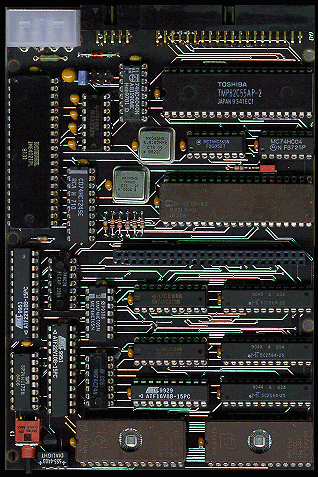
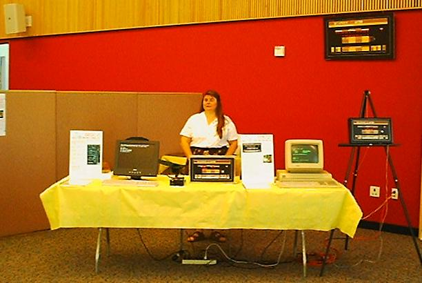
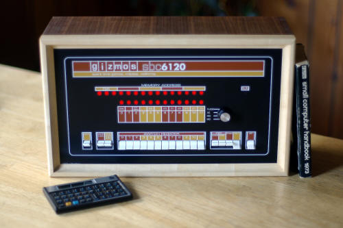
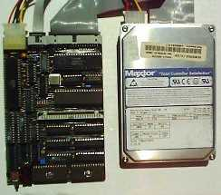
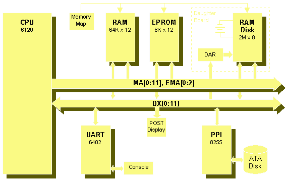
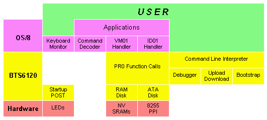
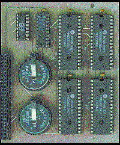

SBC6120
SBC6120


|
|
|
 SBC6120 News

Visit our SBC6120 Builder's Resources Page!
Overview
 The SBC6120 can run all standard DEC paper tape software, such as FOCAL-69, with no changes. Simply use the ROM firmware on the SBC6120 to download FOCAL69.BIN from a PC connected to the console port (or use a real ASR-33 and read the real FOCAL-69 paper tape, if youre so inclined!), start at 2008, and youre running. OS/278, OS/78 and, yes - OS/8 V3D or V3S - can all be booted on the SBC6120 using either RAM disk or IDE disk as mass storage devices. Since the console interface in the SBC6120 is KL8E compatible and does not use a HD-6121, there is no particular need to use OS/278 and real OS/8 V3D runs perfectly well.
 The SBC6120 measures just 4.2 inches by 6.2 inches, or roughly the same size and shape as a standard 3" disk drive. A four layer PC board with internal power planes was needed to fit all the parts in this space. A complete SBC6120 requires just 175mA at 5V to operate, and this requirement can easily be cut in half by omitting the LED POST code display. Imagine - you can have an entire PDP-8, running OS/8 from a RAM disk, thats the size of a paperback book and runs on less than half a watt!
HardwareThe features of the HD-6120 CPU include:
To this the SBC6120 adds:

SoftwareThe 32KW EPROM contains the BTS6120 firmware, which has these features:

Historical NotesAs a historical note, the BTS6120 software started life in 1983 as a bootstrap program for an elaborate Intersil IM6100 system I had planned. The software was developed and tested on a 6100 emulator that I wrote to run on a DECsystem-10, but it never saw any actual hardware. Although I built several simpler 6100 based systems, the one intended for this software proved to be too complex and was never built.
The Model 1 was a useful platform for writing the firmware and device handler to make OS/8 work with the RAM disk, and later for developing and testing the IDE interface and writing the software for that. The Model 1 was too big and clunky, however, and I wanted something that I could fit into a small cabinet along with a hard disk. That, and another few months of designing on weekends and in the evening, gave us the Model 2 that you are reading about now.
LicensingAll SBC6120 files are Copyright (C) 2001-2003 by Spare Time Gizmos.
 All SBC6120 documentation files including the schematics and the SBC6120 User's Guide, are covered under the terms of the GNU Free Documentation License. Permission is granted to copy, distribute and/or modify these files under the terms of the GNU Free Documentation License, Version 1.1 published by the Free Software Foundation; with no invariant sections; with the front cover text "Portions Copyright (C) 2001-2003 by Spare Time Gizmos" and our URL, and with no back cover text.All SBC6120 software and firmware including, but not limited to, BTS6120, PALX, GAL programming, and the VM01/ID01 handlers, are covered under under the terms of the GNU General Public License. Permission is granted to copy, distribute and/or modify these files under the terms of the GNU General Public License as published by the Free Software Foundation, version 2. In general, these licenses will allow you to use the SBC6120 design for any purpose you choose, including to create derivative works. If you choose to distribute the SBC6120 design or a derivative, then you must make your distribution, including source files, free to anyone.
WARNINGSPARE TIME GIZMOS OFFERS NO WARRANTY, EXPRESS OR IMPLIED, AS TO THE RELIABILITY OR ACCURACY OF THE SBC6120 DESIGN. SPARE TIME GIZMOS OFFERS NO WARRANTY, EXPRESS OR IMPLIED, AS TO THE SUITABILITY OR CORRECTNESS OF ANY SOFTWARE OR FIRMWARE SUPPLIED IN CONJUNCTION WITH THE SBC6120. SPARE TIME GIZMOS MAKES NO REPRESENTATIONS AS TO THE SUITABILITY OF THE SBC6120 FOR ANY APPLICATION. THE ENTIRE RISK AS TO THE USE AND PERFORMANCE OF THE SBC6120 IS ASSUMED SOLELY BY YOU.
Update - December 5th, 2011. All kits have been sold.
Free counters provided by Andale. |
Visit these Spare Time Gizmos
|
 Never built, that is, until 1999 when I rescued some 6120 parts from a dead
DECmate and decided that, with cheap SRAMs for mass storage and modern GALS
instead of discrete TTL to build a console interface, it was time. That, and
about six weeks of work designing the hardware and laying out the PC board, and
another two months or so of hacking the BTS6120 software to work in this new
environment and the
Never built, that is, until 1999 when I rescued some 6120 parts from a dead
DECmate and decided that, with cheap SRAMs for mass storage and modern GALS
instead of discrete TTL to build a console interface, it was time. That, and
about six weeks of work designing the hardware and laying out the PC board, and
another two months or so of hacking the BTS6120 software to work in this new
environment and the 
.jpg){kind=link}